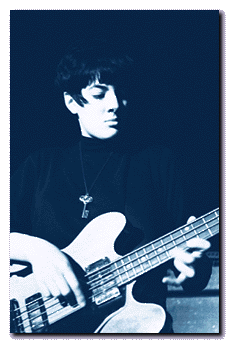

|  | “But if I remember one of the happiest moments, it must have been the night after we finished On Fire. I remember so dearly being in my room at my parents’ house in New York, listening to the dub of the final mixes while lying in bed in the dark room. All I had to listen to the tape on was a tinny cassette player, running out of batteries. The light from the streetlight came in the window that night, as it had all my life. Yet it all took on a magical quality for me as I listened and listened. I was so happy and proud of what we had done. Kramer’s production had, as usual, taken the songs to a level I could never have imagined in our rehearsals - but even without that, all that worrying and rehearsing and planning and editing of the material before we even entered Noise had really done it. We had made something so real. I think I listened all night. I was so astonished.” -- Naomi Yang |